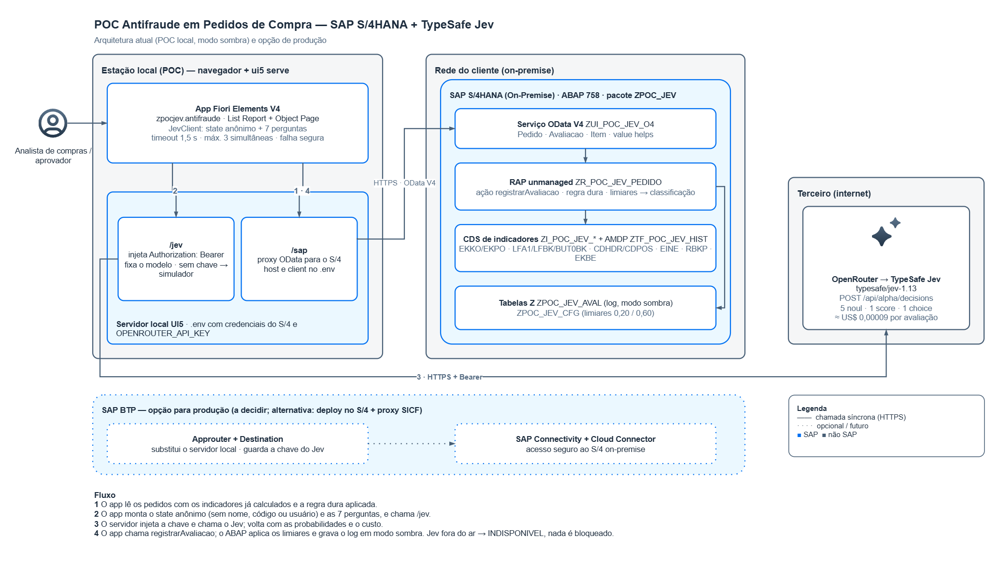

SAP S/4HANA · RAP · Fiori Elements · TypeSafe Jev
Indicadores de risco calculados no ABAP, decisão tipada do Jev e classificação no ABAP, sem bloquear nada enquanto o modelo é calibrado.
Resumo executivo
Cada pedido de compra recebe indicadores de risco calculados no S/4HANA. O Jev estima a probabilidade de cinco tipos de fraude, e o ABAP decide entre liberar, mandar para aprovação ou bloquear, por enquanto só registrando.
Fornecedor de fachada, desvio de pagamento, sobrepreço, fracionamento e fraude interna passam pelo processo de compra sem chamar atenção.
O ABAP calcula os indicadores; o Jev devolve probabilidades por tipo de fraude; o ABAP aplica limiares e grava o log.
Avaliações reais gravadas no S/4 com o Jev real. No caso 4500001366 o modelo apontou fornecedor fictício com 0,87.
| Frente | Status | Observação |
|---|---|---|
| Backend RAP e serviço OData V4 | Pronto | 28 objetos ativos em 2 pacotes, serviço publicado e validado com dados reais |
| App Fiori + integração Jev | Pronto | Chave só no servidor, payload anônimo, falha segura testada |
| Clean core (ATC) | Concluído | ATC de 37 para 0 achados no núcleo; só o wrapper isolado mantém 2 achados justificados |
| Calibração dos limiares | Próximo passo | Depende da ação do aprovador para rotular os casos |
| Hospedagem de produção | A decidir | SAP BTP (approuter + destination) ou deploy no S/4 com proxy SICF |
Conteúdo
Gestão
Resumo executivo, seções 15 e 18Objetivo, custo, situação e próximos passos.
Negócio e auditoria
Parte I e seção 17O que é avaliado, como a decisão é tomada e os casos reais.
Time técnico
Parte II e seção 19Arquitetura, objetos ABAP, contrato da ação, integração e execução.
A POC mostra os pedidos de compra do S/4HANA num app Fiori com indicadores de risco já calculados. A partir do app, o usuário pede ao Jev (modelo de decisão da TypeSafe AI) uma estimativa de risco de fraude. O resultado volta ao ABAP, que aplica limiares e classifica o pedido em liberar, enviar para aprovação ou bloquear.
O Jev não gera texto nem explicação. Ele recebe o estado (os indicadores) e perguntas tipadas, e devolve um valor de um conjunto definido, com probabilidade. Por isso cada risco tem a sua pergunta: as perguntas separadas dizem ao aprovador onde olhar.
BSTYP = F, tipo NB, sem intercompany, sem itens eliminados ou de devolução.EKKO-ERNAM).| Fraude | Como aparece nos dados | Pergunta ao Jev |
|---|---|---|
| Fornecedor fictício ou de fachada | Cadastro novo, pouco ou nenhum histórico, conta bancária compartilhada, cadastrado pelo mesmo usuário que compra | fornecedor_ficticio |
| Desvio de pagamento | Fornecedor antigo troca dados bancários ou endereço e logo recebe pedido; condição de pagamento fora do padrão | desvio_pagamento |
| Sobrepreço | Preço unitário acima do registro info ou do histórico do material | sobrepreco |
| Fracionamento | Vários pedidos ao mesmo fornecedor em poucos dias | fracionamento |
| Fraude interna | Quebra de segregação: o comprador também lança o recebimento ou cadastrou o fornecedor; fatura anterior ao pedido; concentração | fraude_interna |
LFA1-SPERR/SPERM/SPERZ ou
LFM1-SPERM) é decidido no ABAP como BLOQUEIO_REGRA e o Jev não é chamado.
A regra dura sempre vence o modelo. CNPJ inapto ou baixado, CNAE e listas restritivas dependem de fonte
externa e ficaram fora desta POC.
O ABAP calcula todos os indicadores e entrega ao front já prontos. Nada de nome, CNPJ, endereço ou dados bancários em texto: só dias, razões, contagens, flags e categorias.
| Grupo | Indicador | Origem no SAP | Status |
|---|---|---|---|
| Fornecedor | Idade do cadastro na data do pedido (dias) | LFA1 (I_Supplier) | Completo |
| Criador do fornecedor = criador do pedido | LFA1-ERNAM, BUT000-CRUSR, EKKO-ERNAM | Completo | |
| Alterações de banco/endereço em 30 dias e dias desde a última | CDHDR/CDPOS (KRED, BUPA_BUP, BUPA_BANK, BUPA_ADR) | Simplificado | |
| Conta bancária usada por outro fornecedor (flag e quantidade) | LFBK / BUT0BK | Completo | |
| Nº de pedidos, valor médio e desvio padrão | I_PurchaseOrderAPI01 + cálculo em ABAP | Simplificado | |
| Pedido | Valor total, razão vs média do fornecedor e z-score | Pedido + histórico | Completo |
| Preço unitário vs registro info e vs histórico do material (pior item) | EKPO, EINA/EINE | Simplificado | |
| Quantidade vs histórico (pior item) | EKPO | Simplificado | |
| Material nunca comprado desse fornecedor | EKPO | Completo | |
| Condição de pagamento diferente do padrão do fornecedor | EKKO-ZTERM vs LFM1/LFB1 | Completo | |
| Pedido criado depois da fatura | RSEG/RBKP | Completo | |
| Velocidade | Pedidos ao mesmo fornecedor em 24h | EKKO | Por data |
| Pedidos ao mesmo fornecedor em 7 dias | EKKO | Completo | |
| Comprador | Participação do fornecedor nas compras do comprador (%) | I_PurchaseOrderAPI01 | Completo |
| Criador do pedido também lançou a entrada de mercadoria | EKBE (VGABE = 1) | Completo | |
| Fora da POC | Distância do valor até a alçada de aprovação | Estratégia de liberação | Roadmap |
| Idade e situação do CNPJ, CNAE, listas restritivas | Fonte externa | Fora |
"Simplificado": razões só comparam itens na mesma moeda e unidade de preço; alterações de endereço via ADRC (objeto ADRESSE) ficaram de fora; 24h é aproximado por data porque a EKKO não guarda a hora de criação.
Com menos de 3 pedidos anteriores do fornecedor, a razão do valor, o z-score e a participação do
comprador recebem o rótulo insufficient_history no lugar da faixa comparativa. O número cru
continua no state, mas o Jev é instruído a não tratá-lo como desvio. Sem essa regra, um fornecedor com um
único pedido anterior de 500 transformava um pedido de 49.500 em "99× a média".
São sete perguntas na mesma chamada. Todas veem o mesmo state e são respondidas em paralelo, sem ver as respostas umas das outras. As chaves ficam em português (contrato com o ABAP); os textos ficam em inglês, porque a documentação da TypeSafe indica precisão menor em outros idiomas.
| Chave | Tipo | Pergunta | Retorno |
|---|---|---|---|
fornecedor_ficticio | Noul | Is the supplier likely a fictitious (shell) vendor created to divert money? | Probabilidade 0–1 |
desvio_pagamento | Noul | Is there a risk that the payment for this order is being diverted to a different beneficiary? | Probabilidade 0–1 |
sobrepreco | Noul | Is the order overpriced compared with the reference prices? | Probabilidade 0–1 |
fracionamento | Noul | Is this order likely part of a purchase split into several smaller orders to avoid approval limits? | Probabilidade 0–1 |
fraude_interna | Noul | Is there a sign of internal fraud or collusion by the buyer who created the order? | Probabilidade 0–1 |
atipicidade | Score | How atypical is this purchase order compared with the supplier and material history? — 5 níveis, de Typical a Extremely atypical | Nota 1–5 + confiança |
acao | Choice | Which handling would a procurement fraud analyst recommend for this purchase order? | liberar / aprovacao / bloquear, com probabilidade de cada |
Cada pergunta Noul tem critérios true e false com descrição (what),
exclusões (not_for) e exemplos, e aponta com crase os campos do state que deve olhar
(por exemplo `supplier.registration_age`).
acao é gravada para comparação, mas
a classificação é sempre do ABAP, a partir das cinco probabilidades e dos limiares. É o que a
própria documentação do Jev recomenda: o modelo devolve evidência; a política fica no código.
A ação registrarAvaliacao aplica as regras nesta ordem:
| Risco máximo | Classificação | Efeito previsto (fora do modo sombra) |
|---|---|---|
| Abaixo de 20% | LIBERA | Segue sozinho |
| De 20% a 60% | APROVACAO | Vai para aprovação, mostrando as chaves que pesaram |
| Acima de 60% | BLOQUEIA | Bloqueia e alerta |
Os limiares ficam na tabela ZPOC_JEV_CFG, com 0,20 e 0,60 como reserva no código. São
hipótese a calibrar: um estudo de phishing reportou erro de calibração esperado de 0,154 nas probabilidades
diretas do Jev.
Lista de pedidos com valor, regra dura, última classificação, último risco e semáforos de idade do fornecedor, alterações cadastrais, conta compartilhada e preço. Filtros por fornecedor (com nome), criador, data, empresa, org. de compras, regra e classificação. Ação de lista "Avaliar com Jev" para os selecionados.
Seções Fornecedor, Pedido × histórico e Comprador com todos os indicadores; tabela de itens com as razões por item; tabela de avaliações (log); seção "Jev (modo sombra)" com o aviso, a última chamada, o payload enviado, o modelo e o custo. Botão "Avaliar com Jev (modo sombra)".
Primeira avaliação com o Jev real (typesafe/jev-1.13-20260917), em 06/10/2026.
insufficient_history.| Pergunta | Resultado |
|---|---|
| Fornecedor fictício | 0,87 |
| Fraude interna | 0,47 |
| Desvio de pagamento | 0,05 |
| Sobrepreço | 0,05 |
| Fracionamento | 0,05 |
| Atipicidade | 3 de 5 |
| Ação sugerida | aprovação 0,54 · bloquear 0,44 · liberar 0,02 |
Decisão do ABAP: risco máximo 0,87 na chave FORNECEDOR_FICTICIO, acima de 0,60 →
BLOQUEIA, gravado em modo sombra. O modelo sugeriu "aprovação"; a divergência é
esperada, porque a decisão segue os limiares e não a sugestão. Custo da chamada: US$ 0,0000913.
Pedido de 10 BRL, empresa 1410, de 29/07/2026. O fornecedor também foi cadastrado no mesmo dia, pelo mesmo usuário que criou o pedido, sem histórico. A diferença: existe uma fatura com data anterior à criação do pedido. O material, por outro lado, já tinha sido comprado desse fornecedor.
| Resultado | 4500001366 | 4500001545 |
|---|---|---|
| Fornecedor fictício | 0,87 | 0,87 |
| Fraude interna | 0,47 | 0,85 |
| Desvio de pagamento / sobrepreço / fracionamento | 0,05 / 0,05 / 0,05 | 0,05 / 0,06 / 0,06 |
| Atipicidade | 3 | 3 |
| Ação sugerida | aprovação 0,54 · bloquear 0,44 | bloquear 0,51 · aprovação 0,48 |
| Classificação ABAP | BLOQUEIA (fornecedor fictício) | BLOQUEIA (fornecedor fictício) |
O sinal novo (pedido criado depois da fatura) quase dobrou a probabilidade de fraude interna e virou a sugestão do modelo para "bloquear". A classificação não mudou, porque o risco máximo continua sendo fornecedor fictício, com 0,87. Para o aprovador, porém, o segundo pedido acende duas chaves acima de 0,60, e não uma. Isso mostra o valor das perguntas separadas, e sugere exibir também a segunda chave na tela.
A chamada ao Jev sai do front, não do ABAP, passando por uma rota do próprio app que injeta a chave no servidor. O ABAP só expõe os indicadores e recebe as probabilidades de volta.

Diagrama no padrão SAP BTP Solution Diagram, gerado com ARC DRAW. Fonte editável: docs/arquitetura-poc-jev.drawio.
/jev. Pedidos com regra dura não vão ao Jev.registrarAvaliacao; o ABAP aplica os limiares e grava o log.28 objetos em dois pacotes, transporte S4HK913463, todos ativos. O núcleo fica em ZPOC_JEV e usa
só APIs liberadas; o único acesso a fonte não liberada fica isolado no subpacote ZPOC_JEV_WRAP. Sem domínios ou
elementos de dados próprios (tipos built-in).
| # | Objeto | Tipo | Papel |
|---|---|---|---|
| 1 | ZPOC_JEV_AVAL | TABL | Log das avaliações: snapshot dos indicadores, resposta do Jev, classificação, limiares usados, modo sombra, campos de decisão (fase 2) |
| 2 | ZPOC_JEV_CFG | TABL | Limiares e parâmetros |
| 3 | ZI_POC_JEV_PEDIDOITEM | DDLS | Base do pedido e itens no escopo, sobre I_PurchaseOrderAPI01 e I_PurchaseOrderItemAPI01 |
| 4 | ZI_POC_JEV_ITEMIND | DDLS | Indicadores por item: preço vs registro info e histórico, quantidade, material novo |
| 5 | ZI_POC_JEV_PEDIDOVALOR | DDLS | Uma linha por pedido: fornecedor, criador, data, moeda, valor total, datas-limite das janelas |
| 6 | ZI_POC_JEV_HISTFORN | DDLS | Histórico do fornecedor: quantidade, soma e soma dos quadrados (24 meses), pedidos em 24h e 7 dias |
| 7 | ZI_POC_JEV_COMPRADOR | DDLS | Valor comprado pelo comprador no total e com o fornecedor (12 meses) |
| 8 | ZI_POC_JEV_FORNIND | DDLS | Idade e criador do fornecedor, conta compartilhada (BP), regra dura, condição de pagamento |
| 9 | ZI_POC_JEV_ALTCAD | DDLS | Alterações de banco/endereço em 30 dias, lidas pelo wrapper |
| 10 | ZI_POC_JEV_FLUXODOC | DDLS | Fatura anterior ao pedido, criador lançou a entrada (sem estornos), pior item por pedido |
| 11 | ZI_POC_JEV_ULTAVAL | DDLS | Última avaliação e quantidade de avaliações por pedido |
| 12 | ZCL_POC_JEV_STATS | CLAS | Desvio padrão e z-score como campo calculado (CDS não tem raiz quadrada) |
| 13 | ZR_POC_JEV_PEDIDO | DDLS (root) | Raiz: 1 linha por pedido, semáforos, regra dura, última avaliação, nome do fornecedor |
| 14 | ZR_POC_JEV_AVAL | DDLS | Filha: avaliações do pedido (composição) |
| 15 | ZA_POC_JEV_AVAL_IN | DDLS (abstract) | Parâmetro da ação |
| 16 | ZR_POC_JEV_PEDIDO | BDEF | Unmanaged, strict(2), ação registrarAvaliacao |
| 17 | ZBP_R_POC_JEV_PEDIDO | CLAS | Behavior pool: read, lock, ação, limiares, save |
| 18 | ZC_POC_JEV_PEDIDO | DDLS (projection) | Consumo: List Report / Object Page |
| 19 | ZC_POC_JEV_AVAL | DDLS (projection) | Tabela de avaliações |
| 20 | ZC_POC_JEV_ITEM | DDLS | Tabela de itens com indicadores |
| 21 | ZC_POC_JEV_PEDIDO | BDEF (projection) | Expõe a ação |
| 22–24 | ZC_POC_JEV_PEDIDO, _AVAL, _ITEM | DDLX | Anotações de UI: facets, colunas, semáforos, value helps, texto do fornecedor |
| 25 | ZUI_POC_JEV | SRVD | Expõe Pedido, Avaliacao, Item e value helps |
| 26 | ZUI_POC_JEV_O4 | SRVB | OData V4 · UI, publicado |
| 27 | ZCL_POC_JEV_SETUP | CLAS (classrun) | Carga inicial da ZPOC_JEV_CFG (rodar com F9) |
| 28 | ZI_POC_JEV_W_CHGDOC | DDLS · ZPOC_JEV_WRAP | Wrapper liberado (C1) sobre os documentos de modificação; expõe só objeto, documento, data e tabela |
APIs liberadas (C1): I_PurchaseOrderAPI01 · I_PurchaseOrderItemAPI01 · I_Supplier
I_SupplierPurchasingOrg · I_SupplierCompany · I_SupplierToBusinessPartner
I_BusinessPartnerBank · I_PurgInfoRecdOrgPlntDataApi01
I_SupplierInvoiceAPI01 · I_SuplrInvcItemPurOrdRefAPI01 · I_MaterialDocument*_2
│
├─ ZPOC_JEV_WRAP / ZI_POC_JEV_W_CHGDOC wrapper liberado sobre I_ChangeDocument(Item)
│
├─ ZI_POC_JEV_PEDIDOITEM base pedido + itens no escopo
│ └─ ZI_POC_JEV_ITEMIND indicadores por item
├─ ZI_POC_JEV_PEDIDOVALOR valor e janelas por pedido
│ ├─ ZI_POC_JEV_HISTFORN n, Σ, Σ² do fornecedor · 24h / 7d
│ └─ ZI_POC_JEV_COMPRADOR participação do fornecedor no comprador
├─ ZI_POC_JEV_FORNIND fornecedor + regra dura
├─ ZI_POC_JEV_ALTCAD alterações cadastrais 30d (via wrapper)
├─ ZI_POC_JEV_FLUXODOC fatura antes do pedido, criador lançou EM, pior item
├─ ZI_POC_JEV_ULTAVAL última avaliação
│
├─ ZR_POC_JEV_PEDIDO (root) ──composition── ZR_POC_JEV_AVAL
│ └─ ZCL_POC_JEV_STATS desvio padrão e z-score (campo calculado)
├─ ZC_POC_JEV_PEDIDO / ZC_POC_JEV_AVAL / ZC_POC_JEV_ITEM (+ DDLX)
└─ ZUI_POC_JEV (SRVD) → ZUI_POC_JEV_O4 (SRVB, OData V4 UI)I_* liberadas (C1) ou outros objetos Z. O que não tem API liberada, os documentos de modificação, entra por um wrapper isolado em subpacote próprio e marcado como liberado.ZCL_POC_JEV_STATS, como campo calculado. Por isso desvio e z-score aparecem na tela, mas não servem de filtro nem de ordenação.registrarAvaliacaoA raiz é unmanaged (strict 2): é leitura sobre a EKKO, que não tem nem deve ter tabela própria; a única
escrita é a ação, que insere uma linha na ZPOC_JEV_AVAL. A filha é só leitura e o lock é vazio, porque o
log só recebe inserções com chave UUID.
POST /sap/opu/odata4/sap/zui_poc_jev_o4/srvd/sap/zui_poc_jev/0001/
Pedido('4500001403')/com.sap.gateway.srvd.zui_poc_jev.v0001.registrarAvaliacao
{
"JevDisponivel": true,
"ProbFornecedorFicticio": 0.05, "ProbDesvioPagamento": 0.10, "ProbSobrepreco": 0.42,
"ProbFracionamento": 0.08, "ProbFraudeInterna": 0.03,
"Atipicidade": 3,
"JevAcaoSugerida": "APROVACAO",
"JevProbLiberar": 0.30, "JevProbAprovacao": 0.55, "JevProbBloquear": 0.15,
"JevModeloVersao": "typesafe/jev-1.13-20260917"
}| Parâmetro | Tipo | Regra |
|---|---|---|
JevDisponivel | Boolean | false → INDISPONIVEL |
5 × Prob* | Decimal(5,4) | 0 a 1, validado |
Atipicidade | Byte | 1 a 5, validado |
JevAcaoSugerida | String(12) | LIBERAR / APROVACAO / BLOQUEAR |
3 × JevProb* | Decimal(5,4) | 0 a 1 |
JevModeloVersao | String(30) | versão do modelo, ou INDISPONIVEL:<motivo> |
Retorno: o próprio pedido, com LastClassification e LastRiskMax atualizados. Erros de faixa voltam como HTTP 400.
Chave client + aval_uuid. Pedido, data/hora e usuário; snapshot de 16 indicadores;
resposta do Jev (5 probabilidades, atipicidade, ação sugerida e suas probabilidades, versão do modelo);
risco máximo, chave que disparou, classificação, limiares usados, modo sombra; decisão do aprovador (fase 2).
Chave client + param. Linhas previstas: LIMIAR_APROVACAO = 0,20,
LIMIAR_BLOQUEIO = 0,60, MODO_SOMBRA = X, janelas de 30 e 7 dias. Carregada pela classe
ZCL_POC_JEV_SETUP.
App Fiori Elements V4 em C:\SAP IA\zpoc_jev\app. As anotações vivem na CDS; o app tem só a
configuração e uma extensão de controller para o botão do Jev.
| Arquivo | Papel |
|---|---|
webapp/jev/JevClient.js | Monta o state e as 7 perguntas, valida a resposta e converte para os parâmetros da ação. Timeout 1500 ms, máximo 3 chamadas simultâneas |
webapp/jev/AvaliacaoService.js | Orquestra: lê o pedido, aplica a regra dura, chama o Jev, executa a ação |
webapp/ext/controller/*.controller.js | Botão na Object Page e ação na List Report |
webapp/ext/fragment/JevSombra.fragment.xml | Seção "Jev (modo sombra)": aviso, última chamada, payload, modelo e custo |
ui5-middleware/jevProxy.js | Rota /jev: injeta a chave e encaminha ao OpenRouter; sem chave, usa o simulador |
mock-jev/ | Simulador determinístico no mesmo formato do Jev real, com timeout e erros forçáveis |
test/unit/ | 21 testes automáticos |
POST https://openrouter.ai/api/alpha/decisions
Authorization: Bearer <OPENROUTER_API_KEY> (injetado no servidor)
{ "model": "typesafe/jev-1.13",
"state": { "supplier": {...}, "order": {...}, "velocity": {...}, "buyer": {...}, "baseline": {...} },
"questions": { "fornecedor_ficticio": { "type": "noul", ... }, ..., "acao": { "type": "choice", ... } } }| Resposta do Jev | Parâmetro da ação |
|---|---|
answers.<risco>.noul | Prob* (4 casas) |
answers.atipicidade.score (índice 0–4) | Atipicidade = round(score) + 1 |
answers.acao.choice e .probabilities | JevAcaoSugerida (maiúsculas) e JevProb* |
model | JevModeloVersao |
Timeout, erro de rede, HTTP 4xx/5xx (401 chave inválida, 402 sem crédito, 429 limite, 5xx provedor) ou resposta
fora do formato viram INDISPONIVEL, com o motivo em JevModeloVersao
(por exemplo INDISPONIVEL:HTTP_402). Nunca um valor padrão é inventado e nada é bloqueado.
.env); nunca no código, no bundle, no navegador ou no log..env local, fora do controle de versão.#NOT_REQUIRED). Aceito para POC; não para produção.O Jev cobra só os tokens de entrada; a saída é gratuita. Cada resposta traz o custo real em
usage.cost, exibido na tela. Custo medido na primeira chamada real (pedido 4500001366, 7 perguntas):
| Cenário | Avaliações | Custo estimado (US$) |
|---|---|---|
| Volume atual do sistema de teste (288 pedidos no escopo, 1 avaliação cada) | 288 | 0,03 |
| Empresa média: 5.000 pedidos/mês | 5.000 | 0,46 / mês |
| Empresa grande: 50.000 pedidos/mês | 50.000 | 4,57 / mês |
| Backtest de 12 meses a 50.000/mês | 600.000 | 54,78 (uma vez) |
Estimativa linear sobre o custo medido. O custo varia com o tamanho do state e das perguntas (limite de 32.000 tokens por chamada). Confirmar o preço vigente na página do modelo no OpenRouter.
| Teste | Resultado |
|---|---|
| Indicadores com dado real | 4500001403: preço 10% abaixo do registro info, material novo, 2 pedidos em 7 dias. 4500001649: conta compartilhada com 3 fornecedores, criador lançou EM, 32,6% de participação |
| Serviço publicado | $metadata, lista e avaliações respondem HTTP 200 |
| Avaliação com simulador (4500001403) | APROVACAO, risco 0,28 por fracionamento |
| Timeout forçado | Desistiu em 1,5 s e gravou INDISPONIVEL; nada bloqueado |
| Avaliação com o Jev real (4500001366) | BLOQUEIA em modo sombra, fornecedor fictício 0,87 |
| Testes automáticos | 21 de 21: payload sem identificadores, formatos inválidos rejeitados, erros HTTP e timeout viram INDISPONIVEL, limite de concorrência, regra dura, histórico insuficiente, chave nunca em log |
| Qualidade do app | Linter UI5 sem achados; manifest válido contra o schema oficial |
ATC com a variante ABAP_CLOUD_READINESS, a da SAP para prontidão ABAP Cloud, rodado antes e depois da refatoração
de 07/10/2026.
Antes
Depois · núcleo
ZPOC_JEVDepois · wrapper
ZI_POC_JEV_W_CHGDOC| Objeto (antes) | Achados | Lia diretamente | Agora |
|---|---|---|---|
ZI_POC_JEV_FORNIND | 14 | EKKO, LFA1, LFM1, LFB1, CVI_VEND_LINK, BUT000, LFBK, BUT0BK | I_Supplier*, I_BusinessPartnerBank |
ZI_POC_JEV_PEDIDOITEM | 9 | EKKO, EKPO, LFA1, CVI_VEND_LINK, BUT000 | I_PurchaseOrder(Item)API01 |
ZI_POC_JEV_FLUXODOC | 7 | EKKO, EKBE, RSEG, RBKP | I_SupplierInvoiceAPI01, I_MaterialDocument*_2 |
ZI_POC_JEV_ALTCAD | 2 | CDHDR, CDPOS | Wrapper ZI_POC_JEV_W_CHGDOC |
ZR_POC_JEV_PEDIDO | 2 | EKKO | Views Z do núcleo |
ZCL_POC_JEV_HIST_AMDP | 2 | EKKO, EKPO (SQLScript) | Removida: CDS + ZCL_POC_JEV_STATS |
ZI_POC_JEV_ITEMIND | 1 | EINE | I_PurgInfoRecdOrgPlntDataApi01 |
O que ficou: os 2 achados do wrapper vêm de I_ChangeDocument e I_ChangeDocumentItem, que a SAP não
libera. Ficam isolados num único objeto, em subpacote próprio; se o ATC for critério de liberação, registra-se exceção só para ele.
Regressão: os indicadores dos pedidos 4500001403, 4500001649, 4500001366 e 4500001545 ficaram idênticos campo a campo; desvio padrão e z-score conferidos em 4500001410 e 4500001426 contra a implementação antiga; os 288 pedidos e as contagens de conta compartilhada (4), pedido após fatura (5) e criador com entrada (49) não mudaram. O contrato do serviço com o app também não mudou.
Semântica ajustada (aprovada): conta compartilhada passa a vir só do cadastro do BP e o recebimento ignora estornos. Nos dados atuais nenhum valor mudou.
| # | Melhoria | Por quê |
|---|---|---|
| 1 | Rodar ZCL_POC_JEV_SETUP (F9 no ADT) | Grava os limiares na tabela, para ajustá-los sem mexer em código |
| 2 | Ação do aprovador (registrarDecisao) | A decisão humana (era fraude ou não) é o rótulo necessário para calibrar os limiares. Os campos já existem na tabela |
| 3 | Backtest com histórico rotulado | Avaliar um período em lotes, cruzar com casos reais de fraude e falso positivo, e varrer limiares por custo de erro |
| 4 | Corrigir os value helps de Empresa e Org. compras | Ajuste pequeno no DDLX |
| 5 | Excluir usuários técnicos dos flags de criador | Reduz falso positivo em fornecedor fictício e fraude interna |
| 6 | Gravar e exibir todas as chaves acima do limiar | Hoje só a maior vai para o aprovador; no 4500001545 duas chaves passaram de 0,60 |
| 7 | Retestar registrarAvaliacao depois da refatoração | A leitura foi validada; falta uma gravação pelo app para conferir o z-score no log |
| # | Melhoria | Por quê |
|---|---|---|
| 8 | Hospedagem e rota do Jev | Escolher BTP (approuter + destino) ou S/4 (SICF / proxy reverso) para guardar a chave fora do ambiente local |
| 9 | Versão SAPUI5 compatível | Alinhar app (1.136) e servidor (1.114) |
| 10 | Autorização (DCL) nas views Z | Cada usuário passa a ver só os pedidos da sua organização |
| 11 | Exceção de ATC para o wrapper e versão de linguagem ABAP for Cloud no núcleo | Formaliza o desvio isolado e trava novas leituras não liberadas no compilador |
| 12 | Integridade do resultado | Chamada do Jev pelo servidor, ou assinatura da resposta, para o ABAP não depender do que o navegador envia |
| 13 | Retry com espera para HTTP 429 na avaliação em lote | Hoje o limite de chamadas vira INDISPONIVEL |
| 14 | Performance das views de histórico | Janelas menores ou materialização para volumes reais |
| # | Indicador | O que exige |
|---|---|---|
| 13 | Distância do valor até a alçada de aprovação | CDS nova sobre a estratégia de liberação; reforça fracionamento |
| 14 | 24h exato | Hora de criação pelo CDHDR (objeto EINKBELEG) |
| 15 | Alterações de endereço completas | Ligar ADRC (objeto ADRESSE) ao fornecedor |
| 16 | CNPJ, CNAE e listas restritivas | Integração com fonte externa; CNPJ inapto e lista restritiva viram regra dura |
| 17 | Conversão de moeda | Comparar preços em moedas diferentes com currency_conversion |
cd "C:\SAP IA\zpoc_jev\app"
npm install
copy .env.example .env # usuário e senha do S/4 + OPENROUTER_API_KEY
npm start # http://localhost:8080/index.html; em vez de && para encadear comandos.http://localhost:8080/jev/health responde "modo":"real" quando a chave foi lida; sem chave, o app usa o simulador.?jev-sim=timeout ou ?jev-sim=erro ao endereço.INDISPONIVEL:HTTP_404, defina JEV_URL=https://openrouter.ai/api/v1/api/alpha/decisions no .env.| Arquivo | Conteúdo |
|---|---|
zpoc_jev/system-info.md | Capacidades do sistema |
zpoc_jev/gap-analysis.md | Análise de lacunas e desenho aprovado |
zpoc_jev/backend-contract.md | Contrato do serviço OData |
zpoc_jev/jev-api.md | Referência da API do Jev via OpenRouter |
zpoc_jev/app/README.md | Execução do app e roadmap |